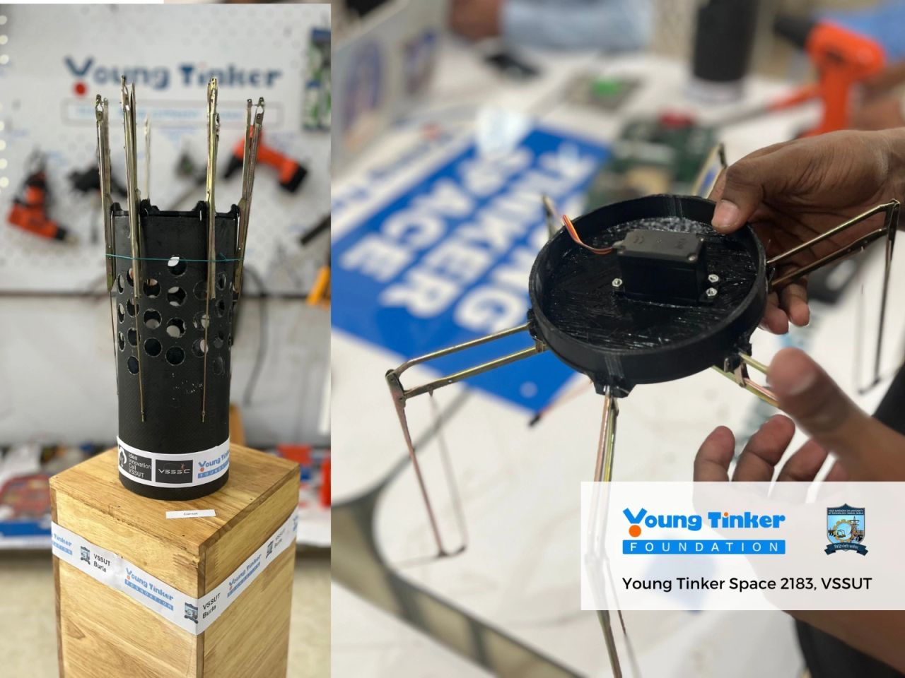
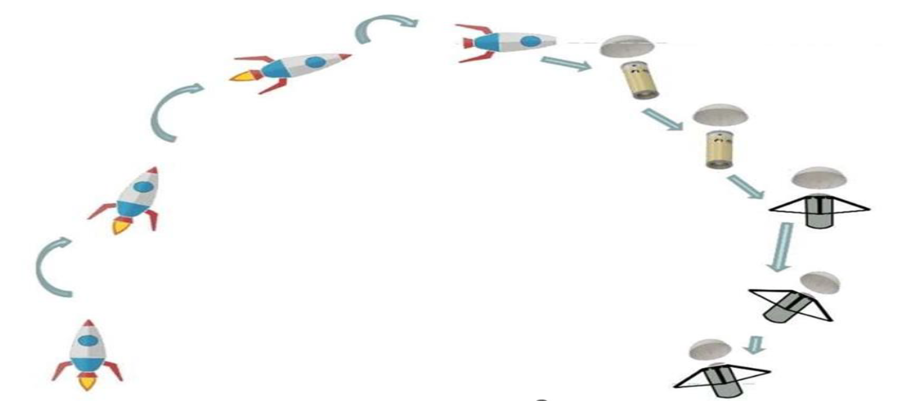
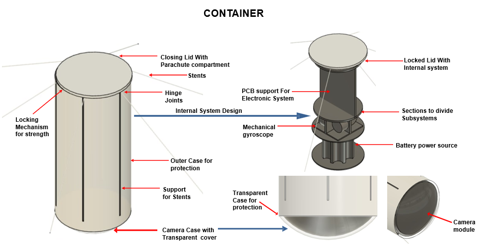
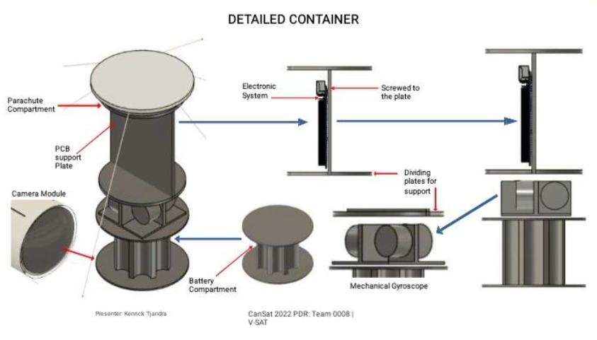
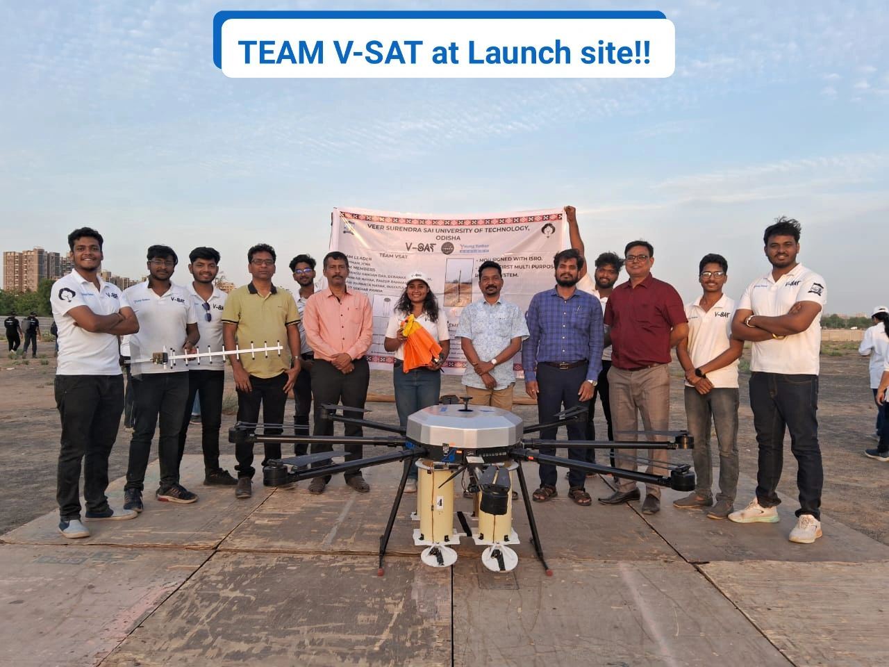

CANSAT India Competition 2024
The development of a CanSat provides an opportunity to investigate the design principles of small-scale satellite systems, integrating aerospace structures, embedded electronics, communication systems, sensing technologies, and recovery mechanisms within a compact cylindrical platform. Designed to replicate the fundamental subsystems of a conventional satellite, a CanSat must accommodate scientific instrumentation while satisfying strict constraints on dimensions, weight, power consumption, and deployment reliability. As part of Team VSAT (Team No. 0008), a CanSat system was designed with the objective of developing a compact scientific payload capable of monitoring atmospheric parameters during descent from a sounding rocket. The proposed mission involved launching the CanSat to an altitude of approximately 800–900 m, followed by deployment near apogee. The system incorporated a protective container and a separately deployable science payload equipped with an umbrella-shaped descent mechanism. The primary objective was to develop a dual-deployment architecture in which the CanSat container descends using a parachute before releasing the scientific payload at approximately 500 m. The payload was designed to achieve a target descent velocity of approximately 3 m/s, enabling atmospheric measurements and visual documentation throughout its descent.
To be added!

The mission architecture was divided into two major components: the protective container and the scientific payload. The container was designed to protect the internal electronics during rocket integration, launch, and initial descent. Following deployment near apogee, the container would descend using a parachute at a target velocity of approximately 20 m/s. At an altitude of approximately 500 m, the container would release the science payload. The payload would subsequently deploy its umbrella-shaped descent mechanism, reducing its descent velocity to approximately 3 m/s. This dual-deployment arrangement was intended to provide a controlled descent profile while allowing sufficient time for atmospheric data acquisition. The scientific payload was designed to monitor several environmental and flight parameters, including altitude, atmospheric pressure, temperature, velocity, orientation, and visual information during descent. A Ground Control Station (GCS) was incorporated into the mission architecture to receive and display the transmitted telemetry. Upon landing, the payload would terminate telemetry transmission and activate an onboard audio beacon to facilitate recovery.

The electronics were organized into separate container and payload assemblies to simplify system integration and maintenance. The payload PCB was designed with dimensions of approximately 60 mm × 150 mm and was intended to be secured to the main payload structure using bolted connections. The container electronics employed a circular PCB with a diameter of approximately 125 mm, mounted directly onto the container body using adhesive. The servo actuators responsible for the deployment mechanism were mounted inside the payload using mechanical fasteners and adhesive support. Sensors positioned near the payload nose, including the particle sensor, were mounted using double-sided foam tape. The camera module was similarly secured using foam tape. For mechanical protection, the container electronics and payload assemblies were enclosed within polyfoam layers. Provision was made for external access to the power switch, while sensors located at the payload nose were protected using PLA enclosures. The camera module was left unenclosed to maintain an unobstructed field of view. This arrangement provided a compact integration strategy while maintaining accessibility to critical electronic components and deployment hardware.
Microstrip patch antennas were considered because of their lightweight construction, low profile, compact dimensions, and compatibility with integrated microwave circuits. However, their relatively narrow bandwidth, limited gain, and lower radiation efficiency were recognized as important design limitations. A Yagi–Uda antenna was also considered for directional communication. Its structure consists of a driven element, reflector, directors, and a supporting boom. The reflector and directors modify the radiation pattern, concentrating the transmitted or received energy towards the intended direction. The high directivity and gain of the Yagi–Uda configuration make it suitable for directional ground communication, although antenna alignment and orientation become important considerations during operation.

Following the design of the mechanical, electronic, and communication subsystems, the CanSat underwent integration and preliminary testing to evaluate its suitability for sounding rocket deployment. Thermal testing was considered necessary because the payload section of the rocket could experience temperatures in the mid-to-upper 30 °C range while positioned on the launch pad. The thermal evaluation was intended to identify potential material deformation, weakening, changes in material characteristics, or electronic malfunction at temperatures up to approximately 35 °C. Vibration testing was also incorporated to evaluate the structural and electrical integrity of the assembled payload. The system was mounted onto a vibration-testing table and subjected to repeated vibration cycles. The table was operated at its highest available frequency for four seconds, followed by a ten-second interval with the vibration switched off. This sequence was repeated for approximately one minute. These tests were intended to identify potential mechanical failures, loose electrical connections, and structural weaknesses before flight integration. The developed electronics and overall system were subsequently tested using the team's own sounding rocket over a range of approximately 1500 m with a single-deployment recovery configuration. The dual-deployment mechanism was still undergoing further testing and development with the sounding rocket.
